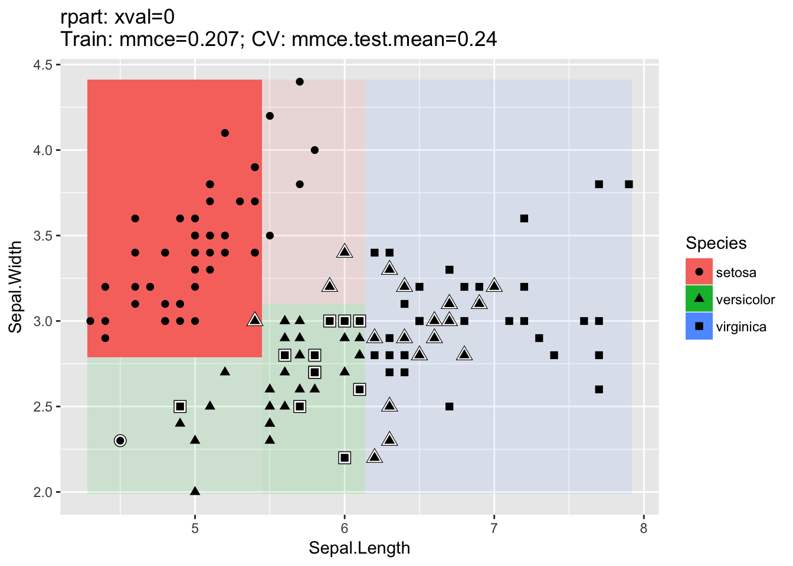
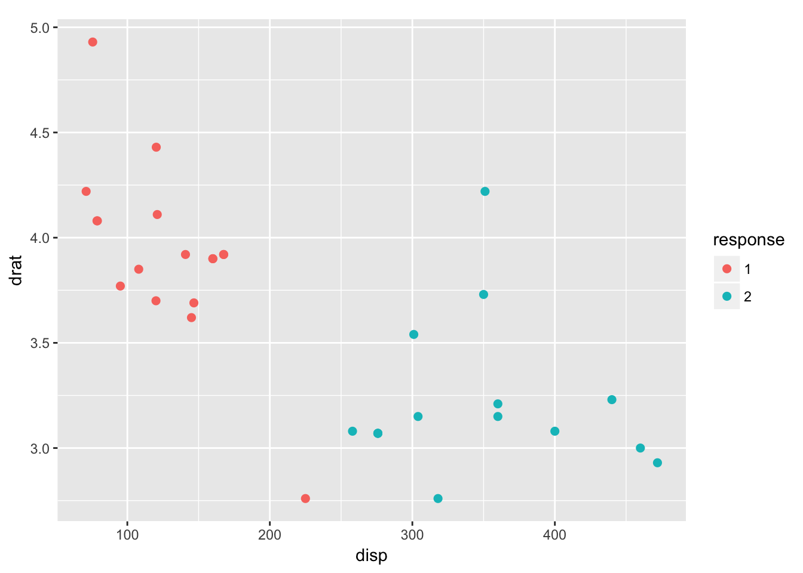
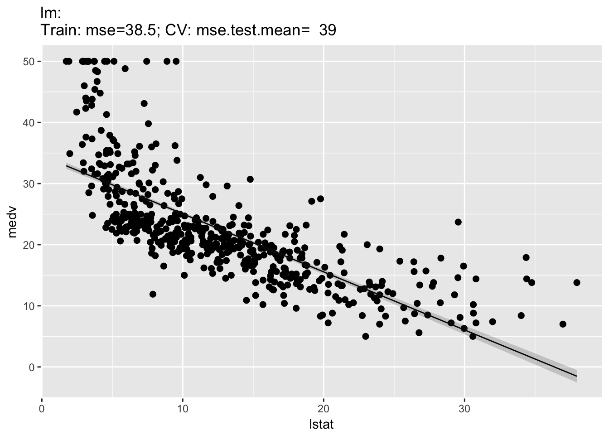
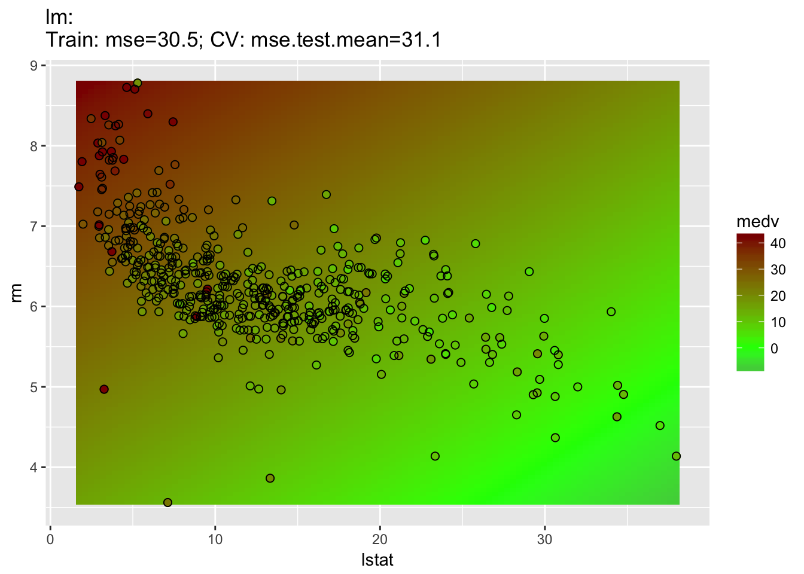

Section 5 予測
5.1 新しいデータに対する結果を予測する
新しい観測値に対する目的変数の予測は、Rの他の予測手法と同じように実装されている。一般的には、predictをtrainが返すオブジェクトに対して呼び出し、予測したいデータを渡すだけだ。
データを渡す方法は2種類ある。
task引数を通じてTaskオブジェクトを渡す。newdata引数を通じてdata.frameを渡す。
最初の方法は、予測したいデータが既にTaskオブジェクトに含まれている場合に適している。
trainと同様に、predictもsubset引数を備えている。したがって、Taskオブジェクトに含まれるデータの異なる部分を訓練と予測に割り当てることができる(より進んだデータ分割の方法はリサンプリングのセクションであらためて解説する)。
以下に、BostonHousingデータに対し、1つおきの観測値に勾配ブースティングマシンによるフィットを行い、残った観測値に対して予測を行う例を示す。データはbh.taskに予め入っているものを使用する。
n = getTaskSize(bh.task)
train.set = seq(1, n, by = 2)
test.set = seq(2, n, by = 2)
lrn = makeLearner("regr.gbm", n.trees = 100)
mod = train(lrn, bh.task, subset = train.set)
task.pred = predict(mod, task = bh.task, subset = test.set)
task.pred$> Prediction: 253 observations
$> predict.type: response
$> threshold:
$> time: 0.00
$> id truth response
$> 2 2 21.6 22.19745
$> 4 4 33.4 23.25992
$> 6 6 28.7 22.38456
$> 8 8 27.1 22.13503
$> 10 10 18.9 22.13503
$> 12 12 18.9 22.13503
$> ... (253 rows, 3 cols)2つめの方法は予測したいデータがTaskオブジェクトに含まれていない場合に使える。
目的変数を除外したirisを使ってクラスター分析を行う例を示そう。奇数インデックスの要素をTaskオブジェクトに含めて訓練を行い、残ったオブジェクトに対して予測を行う。
n = nrow(iris)
iris.train = iris[seq(1, n, by = 2), -5]
iris.test = iris[seq(2, n, by = 2), -5]
task = makeClusterTask(data = iris.train)
mod = train("cluster.kmeans", task)
newdata.pred = predict(mod, newdata = iris.test)
newdata.pred$> Prediction: 75 observations
$> predict.type: response
$> threshold:
$> time: 0.00
$> response
$> 2 1
$> 4 1
$> 6 1
$> 8 1
$> 10 1
$> 12 1
$> ... (75 rows, 1 cols)なお、教師あり学習の場合はデータセットから目的変数列を削除する必要はない。これはpredictを呼び出す際に自動的に削除される。
5.2 予測へのアクセス
predict関数はPredictionクラスの名前付きリストを返す。もっとも重要な要素は$dataであり、このdata.frameは目的変数の真値と予測値の列を含む(教師あり学習の場合)。as.data.frameを使うとこれに直接アクセスできる。
## task引数を通じてデータを渡した例の結果
head(as.data.frame(task.pred))$> id truth response
$> 2 2 21.6 22.19745
$> 4 4 33.4 23.25992
$> 6 6 28.7 22.38456
$> 8 8 27.1 22.13503
$> 10 10 18.9 22.13503
$> 12 12 18.9 22.13503## newdata引数を通じてデータを渡した場合の結果
head(as.data.frame(newdata.pred))$> response
$> 2 1
$> 4 1
$> 6 1
$> 8 1
$> 10 1
$> 12 1Taskオブジェクトを通じてデータを渡した例の結果を見るとわかるように、結果のdata.frameにはid列が追加されている。これは、予測値が元のデータセットのどの値に対応しているのかを示している。
真値と予測値に直接アクセスするための関数としてgetPredictionTruth関数とgetPredictionResponse関数が用意されている。
head(getPredictionTruth(task.pred))$> [1] 21.6 33.4 28.7 27.1 18.9 18.9head(getPredictionResponse(task.pred))$> [1] 22.19745 23.25992 22.38456 22.13503 22.13503 22.135035.3 回帰: 標準誤差を取得する
学習器のなかには標準誤差の出力に対応しているものがあるが、これもmlrからアクセスできる。対応している学習器の一覧は、listLearners関数に引数properties = "se"を指定して呼び出すことで取得できる。このとき、check.packages = FALSEを指定することで、他のパッケージ由来の学習器で当該パッケージをまだインストールしていないものについても一覧に含めることができる。
listLearners("regr", properties = "se", check.packages = FALSE)[c("class", "name")]$> class
$> 1 regr.bcart
$> 2 regr.bgp
$> 3 regr.bgpllm
$> 4 regr.blm
$> 5 regr.btgp
$> 6 regr.btgpllm
$> name
$> 1 Bayesian CART
$> 2 Bayesian Gaussian Process
$> 3 Bayesian Gaussian Process with jumps to the Limiting Linear Model
$> 4 Bayesian Linear Model
$> 5 Bayesian Treed Gaussian Process
$> 6 Bayesian Treed Gaussian Process with jumps to the Limiting Linear Model
$> ... (15 rows, 2 cols)標準誤差出力の例として、BostonHousingに線形回帰モデルを適用する場合を示そう。標準誤差を計算するためには、predict.typeに"se"を指定する。
lrn.lm = makeLearner("regr.lm", predict.type = "se")
mod.lm = train(lrn.lm, bh.task, subset = train.set)
task.pred.lm = predict(mod.lm, task = bh.task, subset = test.set)
task.pred.lm$> Prediction: 253 observations
$> predict.type: se
$> threshold:
$> time: 0.00
$> id truth response se
$> 2 2 21.6 24.83734 0.7501615
$> 4 4 33.4 28.38206 0.8742590
$> 6 6 28.7 25.16725 0.8652139
$> 8 8 27.1 19.38145 1.1963265
$> 10 10 18.9 18.66449 1.1793944
$> 12 12 18.9 21.25802 1.0727918
$> ... (253 rows, 4 cols)標準誤差だけが欲しければ、getPredictionSE関数を使用する。
head(getPredictionSE(task.pred.lm))$> [1] 0.7501615 0.8742590 0.8652139 1.1963265 1.1793944 1.07279185.4 分類とクラスタリング: 確率を取得する
予測値に対する確率はPredictionオブジェクトにgetPredictionProbabilities関数を使うことで取得できる。以下にクラスタ分析の別の例を示そう。ここではファジイc-means法によりmtcarsデータセットをクラスタリングしている。
lrn = makeLearner("cluster.cmeans", predict.type = "prob")
mod = train(lrn, mtcars.task)
pred = predict(mod, task = mtcars.task)
head(getPredictionProbabilities(pred))$> 1 2
$> Mazda RX4 0.97959380 0.020406201
$> Mazda RX4 Wag 0.97963402 0.020365983
$> Datsun 710 0.99266041 0.007339591
$> Hornet 4 Drive 0.54291331 0.457086691
$> Hornet Sportabout 0.01870551 0.981294490
$> Valiant 0.75745946 0.242540537分類問題においては、注目すべきものがいくつかあるが、デフォルトではクラスラベルが予測される。
mod = train("classif.lda", task = iris.task)
pred = predict(mod, task = iris.task)
pred$> Prediction: 150 observations
$> predict.type: response
$> threshold:
$> time: 0.00
$> id truth response
$> 1 1 setosa setosa
$> 2 2 setosa setosa
$> 3 3 setosa setosa
$> 4 4 setosa setosa
$> 5 5 setosa setosa
$> 6 6 setosa setosa
$> ... (150 rows, 3 cols)事後確率を得たければ、学習器を作成する際にpredict.type引数に適当な値を指定する必要がある。
lrn = makeLearner("classif.rpart", predict.type = "prob")
mod = train(lrn, iris.task)
pred = predict(mod, newdata = iris)
head(as.data.frame(pred))$> truth prob.setosa prob.versicolor prob.virginica response
$> 1 setosa 1 0 0 setosa
$> 2 setosa 1 0 0 setosa
$> 3 setosa 1 0 0 setosa
$> 4 setosa 1 0 0 setosa
$> 5 setosa 1 0 0 setosa
$> 6 setosa 1 0 0 setosaクラスラベルは確率が最大のものが選択され、確率がタイの要素があればアトランダムに選択される。
もし事後確率だけがほしければgetPredictionProbabilities関数を使う。
head(getPredictionProbabilities(pred))$> setosa versicolor virginica
$> 1 1 0 0
$> 2 1 0 0
$> 3 1 0 0
$> 4 1 0 0
$> 5 1 0 0
$> 6 1 0 05.5 分類: 混同行列を取得する
混同行列はcalculateConfusionMatrix関数により得ることが出来る。列は予測したクラス、行は真のクラスのラベルを表す。
calculateConfusionMatrix(pred)$> predicted
$> true setosa versicolor virginica -err.-
$> setosa 50 0 0 0
$> versicolor 0 49 1 1
$> virginica 0 5 45 5
$> -err.- 0 5 1 6対角成分には正しく分類された要素の数が、それ以外の部分には誤分類された要素の数が現れる。また、-err.-の行および列には誤分類された要素の合計数が表示される。
relative=TRUEを指定することで、相対頻度を得ることも出来る。
conf.matrix = calculateConfusionMatrix(pred, relative = TRUE)
conf.matrix$> Relative confusion matrix (normalized by row/column):
$> predicted
$> true setosa versicolor virginica -err.-
$> setosa 1.00/1.00 0.00/0.00 0.00/0.00 0.00
$> versicolor 0.00/0.00 0.98/0.91 0.02/0.02 0.02
$> virginica 0.00/0.00 0.10/0.09 0.90/0.98 0.10
$> -err.- 0.00 0.09 0.02 0.04
$>
$>
$> Absolute confusion matrix:
$> predicted
$> true setosa versicolor virginica -err.-
$> setosa 50 0 0 0
$> versicolor 0 49 1 1
$> virginica 0 5 45 5
$> -err.- 0 5 1 6相対頻度を計算する際、行方向と列方向の2通りの正規化の仕方があるため、上記相対混同行列の中には各要素ごとに2つの値が現れている。セットになった2つの値の1つめは行方向、つまり真のラベルについてグループ化した値で、2つめは予測値についてグループ化した値である。
相対値は$relative.rowおよび$relative.colを通して直接アクセスすることもできる。詳しくはConfusionMatrixのドキュメント(ConfusionMatrix function | R Documentation)を参照してもらいたい。
conf.matrix$relative.row$> setosa versicolor virginica -err-
$> setosa 1 0.00 0.00 0.00
$> versicolor 0 0.98 0.02 0.02
$> virginica 0 0.10 0.90 0.10最後に、予測値および真値について、各クラスに振り分けられた要素数をsums=TRUEを指定することで結果に追加できる。これは相対混同行列と絶対混同行列の両方に追加される(訳注: 相対と絶対で行列が入れ替わっているのはなぜだ…？)。
calculateConfusionMatrix(pred, relative = TRUE, sums = TRUE)$> Relative confusion matrix (normalized by row/column):
$> predicted
$> true setosa versicolor virginica -err.- -n-
$> setosa 1.00/1.00 0.00/0.00 0.00/0.00 0.00 50
$> versicolor 0.00/0.00 0.98/0.91 0.02/0.02 0.02 54
$> virginica 0.00/0.00 0.10/0.09 0.90/0.98 0.10 46
$> -err.- 0.00 0.09 0.02 0.04 <NA>
$> -n- 50 50 50 <NA> 150
$>
$>
$> Absolute confusion matrix:
$> setosa versicolor virginica -err.- -n-
$> setosa 50 0 0 0 50
$> versicolor 0 49 1 1 50
$> virginica 0 5 45 5 50
$> -err.- 0 5 1 6 NA
$> -n- 50 54 46 NA 1505.6 分類: 決定閾値の調整
事後確率をクラスラベルに割り当てるために用いる閾値は調整することができる。閾値を調整するためには、そもそも確率を予測する学習器を使用する必要があるという点に注意しよう。2クラス分類では、閾値はpositiveクラスに分類するための基準となる。デフォルトは0.5だ。例として閾値を0.9にしてみよう。つまり、事後確率が0.9を上回った時にpositiveに分類するということだ。2つのクラスのどちらがpositiveになっているかは(以前確認したとおり)Taskオブジェクトを通じて確認できる。今回は2クラス分類の例としてmlbenchパッケージのSonarデータを使おう。
## 学習器の作成と訓練。タスクは用意されているものを使う。
lrn = makeLearner("classif.rpart", predict.type = "prob")
mod = train(lrn, task = sonar.task)
## positiveクラスのラベルを確認する
getTaskDesc(sonar.task)$positive$> [1] "M"## デフォルトの閾値で予測する
pred1 = predict(mod, sonar.task)
pred1$threshold$> M R
$> 0.5 0.5## positiveクラスに分類する閾値を変更する
pred2 = setThreshold(pred1, threshold = 0.9)
pred2$threshold$> M R
$> 0.9 0.1pred2$> Prediction: 208 observations
$> predict.type: prob
$> threshold: M=0.90,R=0.10
$> time: 0.01
$> id truth prob.M prob.R response
$> 1 1 R 0.1060606 0.8939394 R
$> 2 2 R 0.7333333 0.2666667 R
$> 3 3 R 0.0000000 1.0000000 R
$> 4 4 R 0.1060606 0.8939394 R
$> 5 5 R 0.9250000 0.0750000 M
$> 6 6 R 0.0000000 1.0000000 R
$> ... (208 rows, 5 cols)閾値の変更は混同行列に対しても影響する。
calculateConfusionMatrix(pred1)$> predicted
$> true M R -err.-
$> M 95 16 16
$> R 10 87 10
$> -err.- 10 16 26calculateConfusionMatrix(pred2)$> predicted
$> true M R -err.-
$> M 84 27 27
$> R 6 91 6
$> -err.- 6 27 33getPredictionProbabilitiesはデフォルトではpositiveクラスの事後確率しか返さない事に注意しよう。
head(getPredictionProbabilities(pred1))$> [1] 0.1060606 0.7333333 0.0000000 0.1060606 0.9250000 0.0000000次のようにすると全ての事例について確率を得ることができる。
head(getPredictionProbabilities(pred1, cl = c("M", "R")))$> M R
$> 1 0.1060606 0.8939394
$> 2 0.7333333 0.2666667
$> 3 0.0000000 1.0000000
$> 4 0.1060606 0.8939394
$> 5 0.9250000 0.0750000
$> 6 0.0000000 1.0000000多クラス分類の場合は、閾値は名前付き数値ベクトルとして与える。予測結果の確率は与えた数値で除算された後に比較され、最大値を持つクラスが予測クラスとして選択される。
lrn = makeLearner("classif.rpart", predict.type = "prob")
mod = train(lrn, iris.task)
pred = predict(mod, newdata = iris)
pred$threshold # デフォルトの閾値$> setosa versicolor virginica
$> 0.3333333 0.3333333 0.3333333## 閾値の変更 大きな値を指定するほど予測されにくくなる
pred = setThreshold(pred, c(setosa = 0.01, versicolor = 50, virginica = 1))
pred$threshold$> setosa versicolor virginica
$> 0.01 50.00 1.00table(as.data.frame(pred)$response)$>
$> setosa versicolor virginica
$> 50 0 1005.7 予測の可視化
モデルの説明や教育目的で予測を可視化したければ、plotLearnerPrediction関数を使うことができる。この関数は学習器から1つないし2つの特徴量を選んで訓練したのち、その結果をggplot2パッケージを用いてプロットする。
分類では、2つの特徴量(デフォルトではデータセットのはじめの2つが選ばれる)を選んで散布図を作成する。シンボルの形状は真のクラスラベルに対応する。誤分類されたシンボルは、周囲が白色の線で囲われることで強調される。学習器がサポートしていれば、事後確率は背景色の彩度により表現され、事後確率が高い部分ほど高彩度となる。
set.seed(777)
lrn = makeLearner("classif.rpart", id = "CART")
plotLearnerPrediction(lrn, task = iris.task)
クラスター分析も2つの特徴量による散布図を作成する。この場合はシンボルの色がクラスターに対応する。
lrn = makeLearner("cluster.kmeans")
plotLearnerPrediction(lrn, mtcars.task, features = c("disp", "drat"), cv = 0)$>
$> This is package 'modeest' written by P. PONCET.
$> For a complete list of functions, use 'library(help = "modeest")' or 'help.start()'.
回帰に対してはプロットが2種類ある。1Dプロットでは一つの特徴量と目的変数の関係が示される。このとき、回帰曲線と(学習器がサポートしていれば)推定標準誤差が示される。
plotLearnerPrediction("regr.lm", features = "lstat", task = bh.task)
2Dプロットでは分類の場合と同様に2つの特徴量による散布図が作成される。この場合シンボルの塗りつぶし色が目的変数の値に対応し、予測値は背景色として示される。標準誤差は示すことができない。
plotLearnerPrediction("regr.lm", features = c("lstat", "rm"), task = bh.task)